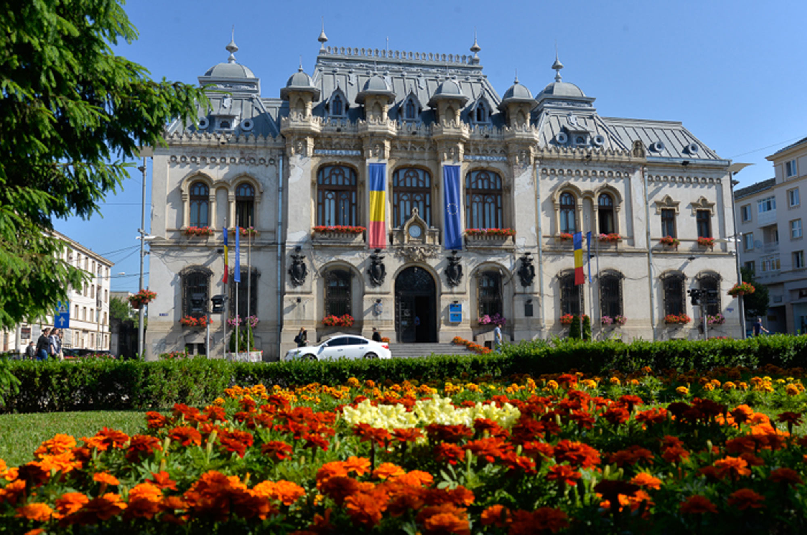

Craiova
Craiova is een historische stad in het zuidwesten van Roemenië, gelegen aan de rivier de Jiu. Als hoofdstad van Dolj en economisch centrum van Oltenië combineert de stad een rijke geschiedenis met moderniteit. Craiova staat bekend om het Nicolae Romanescu Park, prachtige 19e-eeuwse architectuur, een bruisend cultureel leven en de gerenommeerde Universiteit van Craiova. Met haar gastvrije sfeer en unieke mix van traditie en vernieuwing is het een belangrijke en boeiende stad.
Algemene informatie
- Bevolkingsgrootte: 260.000 tot 270.000 inwoners
- Oppevlakte: 81,41 km²
- Gelegen in het zuidwesten van Roemenië

Bezienswaardigheden
-
Nicolae Romanescu Park – Een van de grootste en mooiste parken in Oost-Europa, met een meer, een hangbrug en een charmant amfitheater.
- Het Monument van Mihai Viteazul – Een standbeeld ter ere van de beroemde prins die Roemenië in de 16e eeuw tijdelijk verenigde.
- Botanische Tuin van Craiova – Een serene plek met zeldzame plantensoorten, perfect voor ontspanning en natuurbeleving.
- Metropolitan Cathedral of St. Demetrius – Een belangrijke orthodoxe kerk uit de 15e eeuw, met rijke iconografie en historische waarde.
- Craiova Art Museum (Palatul Jean Mihail) – Gehuisvest in een indrukwekkend neobarok paleis, met werken van beroemde Roemeense kunstenaars zoals Constantin Brâncuși.
Lokale activiteiten
1. Bezoek het Nicolae Romanescu Park
Dit is een van de mooiste en grootste stadsparken van Roemenië, ontworpen door de beroemde Franse tuinarchitect Édouard André. Het park heeft prachtige wandelpaden, een meer waar je kunt roeien, en een dierentuin. Het is een ideale plek om te ontspannen en te genieten van de natuur.

2. Verken het Craiova Museum van de Geschiedenis
Gevestigd in het indrukwekkende gebouw van het oude stadspaleis, biedt dit museum een diepgaande kijk op de geschiedenis van de regio, van de prehistorie tot de moderne tijd. Je kunt er archeologische vondsten, middeleeuwse kunst en andere historische artefacten bewonderen.
3. Het Oltenia Theater
Craiova heeft een rijke theatertraditie, en het Oltenia Theater biedt een breed scala aan voorstellingen, van klassieke toneelstukken tot moderne producties. Het theater zelf is een prachtig gebouw en een cultureel centrum van de stad.
4. Verken de "Carol I" Universiteit en het Universiteitsplein
De "Carol I" Universiteit is een van de oudste universiteiten van Roemenië. Het is een mooie plek om rond te wandelen en de indrukwekkende architectuur van de universiteitsgebouwen te bewonderen. In de buurt ligt ook het Universiteitsplein, waar je kunt genieten van het bruisende stadsleven.